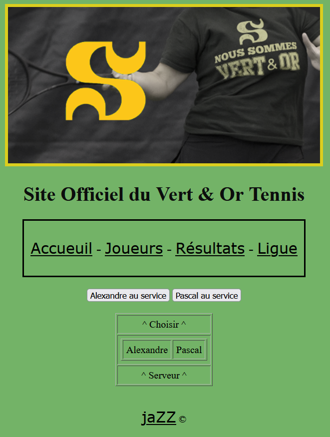
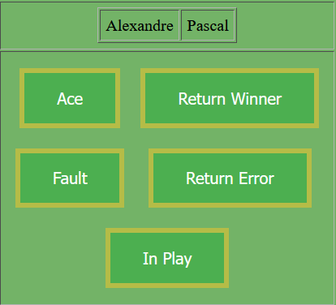
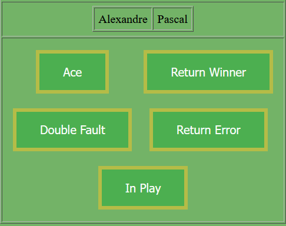
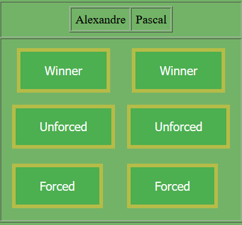
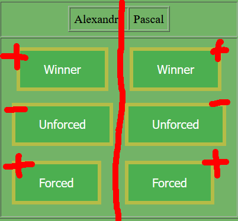
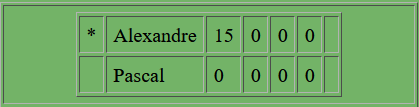
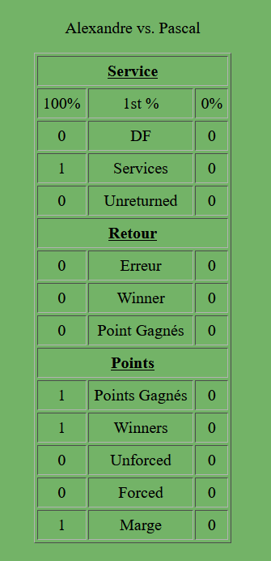

Tennis Tracker Tutorial

2) Cliquer sur commencer le match
3) Cliquer sur le joueur qui commence au service

4) Il existe 3 dispositions différentes
| Au début du point |
Si le premier service est manqué
"Fault" devient "Double Fault" |
Si la balle est en jeu après le retour
Après "In Play" |
|  |
 |
 |
4.1) La dernière disposition peut porter à confusion
 |
Les joueurs ont leur côté respectif (gauche-droite).
Un "Winner" et un "Forced" font gagner le joueur respectif
Tandis qu'un "Unforced" fait perdre le joueur respectif.
5) Dictionnaire:
- Ace: service intouché par l'adversaire;
- Fault: premier service raté;
- Return Error: retour raté;
- Return Winner: retour gagnant (intouché par le joueur au service);
- Double Fault: double faute :( ;
- In Play: le serveur touche la première balle après le retour;
- Winner*: coup gagnant (intouché par l'adversaire) (ex. la balle fait deux bonds après un amorti);
- Unforced: erreur non forcée, le joueur rate une balle sans être provoqué;
- Forced*: le joueur force son adversaire à rater, il gagne le point en causant une erreur (ex. balle d'attaque);
- *: Un "Winner" et un "Forced" sont deux événements différents. Pour être qualifier "Winner",
la balle ne doit pas toucher la raquette du joueur. Si un joueur met la balle dans le filet après avoir reçu
une lourde attaque, on considère l'événement "Forced"
Exemple: Si le joueur rate son premier service, réussi son deuxième et l'adversaire rate après 6 échanges dans le filet :
Ordre des butons: Fault, In Play, Pascal[Unforced]
Exemple: Si le joueur rate son premier service, réussi son deuxième et l'adversaire rate le retour dans le filet :
Ordre des butons: Fault, Return Error
Exemple: Si le joueur réussi son premier service, et qu'il fait un coup gagnant après 3 échanges :
Ordre des butons: In Play, Alexandre[Winner]
6) Le pointage du match change automatiquement
 |
7) Les statistiques du match changent automatiquement
 |
8) À la fin du match (ou n'importe quand durant le match), le bouton "Bleed Green - Submit" sauvegarde les données
 |